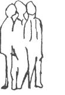

Ladies and Gentlemen,
Today I intend a kind of introduction. In tomorrow's lecture we shall begin and try to give a more or less complete picture of the questions of social and political economy which man today must set before himself.
The subject of Economics, as we speak of it today, is in reality a very recent creation. It did not arise until the time when the economic life of modern peoples had become extraordinarily complicated in comparison with earlier conditions. As this Course is intended primarily for students of Political Economy, it is necessary by way of introduction to point out this peculiarity of the economic thinking of today.
After all, we need not go very far back in history to see how much economic life has changed, even during the nineteenth century. You need only consider this one fact: England, for example, already had, during the first half of the century, what was practically the modern form of economic life. There was comparatively little radical change in the economic structure of England in the course of the nineteenth century. The great social questions which arise out of economic questions in modern times were being asked in England as early as the first half of the nineteenth century: and those who wanted to think of social and economic questions in the modern sense could pursue their studies in England at a time when in Germany — for instance — such studies must have remained unfruitful. In England, above all, the conditions of trade and commerce on a large scale had already come into being by the first third of the nineteenth century. Through the great development of trade and commerce in the economic life in England, a foundation was already there in the shape of trade capital. In England there was no need to seek for any other starting-point for modern economic life. They simply had to apply the trade capital resulting from the consolidation of trade and commerce even as early as the first third of the nineteenth century. Starting from this time, everything took place in England with a certain logical consistency; only we must not forget that the whole of this English economic life was only possible on the basis originally given by England's relation to her colonies, especially to India. The whole of the English economic system is unthinkable without the relationship of England to India. In other words, English economic life, with all its facility for evolving large sums of capital, is founded on the fact that there lies in the background a country which is, as it were, virgin economic soil. We must not overlook this fact, especially when we pass from England to Germany.
If you consider the economic life of Germany you will see that in the first third of the nineteenth century it still essentially corresponded to economic customs which had arisen out of the Middle Ages. The economic customs and relationships within Germany in the first third of the nineteenth century were essentially old: consequently the whole tempo of economic life was different in Germany from what it was in England during the first third, or even the first half, of the nineteenth century. In England, during the first half of the century, there was already what we may call a reckoning with quickly changing habits of life. The main character of economic life remained essentially the same: but it was already adaptable to quickly changing habits. In Germany, on the other hand, habits of life were still conservative: economic development could afford to advance at a snail's pace, for it had only to adapt itself to technical conditions, which remained more or less the same over long periods, and to human needs, which were not rapidly changing.
But in this respect a great transformation took place in the second third of the nineteenth century. Then there rapidly took place an approximation to English conditions, a development of the industrial system. In the first half of the nineteenth century Germany had been in all essentials an agrarian country: now it was rapidly transformed into an industrial country, far more rapidly than any other region of the Earth.
But there is an important fact in this connection. We might describe it thus: In England the transition to an industrial condition of life took place instinctively: nobody knew exactly how it happened. It came like an event of Nature. In Germany, it is true, the medieval character still existed in the first third of the nineteenth century. Germany was an agrarian country. But while the outer economic conditions were taking their accustomed course in a way that might almost be called medieval, human thinking was undergoing a fundamental change. It came into the consciousness of men that something altogether different must now arise, that the existing conditions were no longer true to the time. Thus the transformation of economic conditions which arose in Germany in the second third of the nineteenth century took place far more consciously than in England. In Germany people were far more aware of how they entered into modern capitalism: in England people were not aware of it at all. If you read today all the writings and discussions in Germany during that period concerning the transition to industrialism, you will get a remarkable impression, a strange impression, of how the people in Germany were thinking. Why, they actually looked upon it as a real liberation of mankind: they called it Liberalism, Democracy. Nay, more, they regarded it as the very salvation of mankind to get right out of the old connections, the old binding links, the old kind of corporation, and pass over to the fully free position (for so they called it) of the individual within the economic life. Hence in England you will never meet with a theory of Economics such as was developed by the people who received their education in Germany in the height of the period which I have now characterised. Schmoller, Roscher and others derived their views from the heyday of this “Liberalism” in Political Economy. What they built up was altogether in this sense, and they built it with full consciousness. An Englishman would have thought such theories of Economics stale and boring; he would have said: “One does not trouble to think about such things.” Look at the radical difference between the way in which people in England talked about these things (to mention even a man like Beaconsfield, who was theoretical enough in all conscience) from the way in which Richter or Lasker or even Brentano were speaking in Germany. In Germany, therefore, this second period was entered into with full consciousness.
Then came the third period, the period essentially of the State. It is true, is it not, that as the last third of the nineteenth century drew near, the German State was consolidated purely by means of external power. That which was consolidated was not what the idealists of '48 or even of the 1830's had desired: no, it was the “State” that was consolidated, and moreover by means of sheer force. And this State, by and by, requisitioned the economic life with full consciousness for its own purposes. Thus, in the last third of the nineteenth century, the structure of the economic life was permeated through and through by the very opposite principle to the previous one. In the second third of the century its evolution had been subject to the ideas of “Liberalism.” Now its evolution became altogether subject to the idea of the State. This was what gave the economic life in Germany, as a whole, its stamp. It is true that there were elements of consciousness in the whole process, and yet in another sense the whole thing was quite unconscious.
But the most important thing is this: Through all these developments a radical contrast, an antagonism of principle, was created, not only in thought but in the whole conduct of economic life itself between the English and the Mid-European economy. And, ladies and gentlemen, on this contrast the manner of their economic intercourse depended. The whole economy of the nineteenth century, as it evolved into the twentieth, would be unthinkable without this contrast between the West and Middle Europe. The way in which men sold, the way in which they found a market for their goods, the way in which they manufactured them, all this would be unthinkable without this contrast.
This was the course of development. First the economic and industrial life of England became possible on the basis of her possession of India: next it became possible for the whole economic activity to be extended on the basis of the contrast between the Western and the Mid-European economic life. In effect, the economic life is founded not on what one sees in one's immediate surroundings, but on the great reciprocal relationships in the world at large.
Now it was with this contrast that the world as a whole entered into the state of world-economy and — could not enter! For the world continued to depend on that instinctive element which had evolved from the past, and the existence of which I have just indicated in describing the antithesis between England and Mid-Europe. In the twentieth century, though the world was unaware of the fact, we stood face to face with this situation. The antithesis became more and more immediate, it became deeper and deeper: and we stood before this great question: The economic conditions had evolved out of these antitheses or contrasts and, having done so, they were carrying the contrasts themselves ever more intensely into the future. And yet, if the contrast were to go on for ever increasing, economic intercourse would become impossible. This was the great question of the twentieth century: The contrast had created the economic life; the economic life had in turn enhanced the contrast. The contrast was calling for a solution. The question was: How are these contrasts or antagonisms to be resolved? The further course of history was destined to prove that men were incapable of finding the answer.
It would have been practical to talk in words like these in 1914, in the days of peace. But, in place of a solution, there came the result of failure to find such a world-historic solution. Such was the disease which then set in, seen from the economic aspect.
You must recognise that the possibility of all evolution always depends on contrasts or antitheses in the last resort. I will only mention one example. Through the fact that the English economic life had been consolidated far earlier than the Mid-European, the English were unable to make certain goods at prices as cheap as were possible in Germany. Thus, there arose the great contrast or antagonism of competition, for “Made in Germany” was simply a question of competition. And when the war was over, this question could arise: Now that people have knocked each other's heads in, instead of seeking a solution of existing contrasts, how can we deal with the matter? At this time I could not but believe in the possibility of finding human beings who would understand the contrasts which must be brought forth in another domain. For life depends on contrasts, and can only exist if contrasts are there, interacting with one another. Thus in 1919 one could come to the point of saying: Let us now draw attention to the real contrasts or contra-positions towards which world-historic evolution is tending — those of the economic life, the political life of rights and the spiritual-cultural life — the contra-positions of the threefold social order.
What, after all, was the actual situation when we believed that we must bring the threefold idea into as many human heads as possible? I will only describe it externally today. The important thing would have been to bring the threefold idea into as many heads as possible before the economic consequences ensued which afterwards took place. You must remember when the “Threefold Commonwealth” was first mentioned, we did not yet stand face to face with the monetary difficulties of today. On the contrary, if the Threefold Commonwealth had been understood at that time, these difficulties could never have occurred. Yet once again we were faced by the inability of human beings to understand such a thing as this in a really practical sense. When we tried to bring the Threefold Commonwealth home to them, people would come and say: “Yes, all that is excellent: we see it perfectly. But, after all, the first thing needful is to counteract the depreciation of the currency.” Ladies and gentlemen, all that one could answer was: “That is contained in the Threefold Order. Set to work with the Threefold Order. That is the only means of counteracting the depreciation of the currency.” People were asking how to do the very thing which the Threefold Commonwealth was meant to do. They did not understand it, however often they declared that they did.
And now the position is such that if we are to speak once more today to people such as you, we can no longer speak in the same forms as we did then. Today another language is necessary: and that is what I want to give you in these present lectures. I want to show you how one must think once more today about these questions, especially if, being young in years, one will still have an opportunity to play one's part in shaping the immediate future.
Thus, on the one hand, we can characterise a certain period — the nineteenth century — in terms of world-historic economic contrasts. But we might also go still farther back and include the time when men first began to think about Political Economy at all. If you take the history of Political Economy you will see that everything before that time took place instinctively. It was only in modern times that there arose that complexity of economic life, in the midst of which men felt it necessary to think about these things.
Now I am speaking, in effect, for students. I am trying to show how students of Economics should find their way into this subject. Let me, therefore, now relate the most essential thing on which it all depends.
You see, the time when men had to begin to think about Political Economy was just the time when they no longer had the thoughts to comprehend such a subject. They simply no longer had the requisite ideas. I will give you an example from Natural Science to indicate that this is so.
We as human beings have our physical bodies, which are heavy just like any other physical bodies. Your physical body will be heavier after a midday meal than before: we could even weigh the difference. That is to say, we partake in the general laws of gravity. But with this gravity, which is the property of all ponderable substances, we could do very little in our human body, we could at most go about the world as automata, certainly not as conscious beings. I have often explained what is essential to any valid concept of these matters. I have often said what man needs for his thinking. The human brain, if we weigh it alone, weighs about 1,400 grammes. If you let the weight of these 1,400 grammes press on the veins and arteries, which are situated at the base of the skull, it would destroy and kill them. You could not live for a single moment if the human brain were pressing downward with its full 1,400 grammes. It is indeed a fortunate thing for man that the principle of Archimedes holds good. I mean that every body loses so much of its weight in water as is the weight of that fluid which it displaces. If this is a heavy body, it loses as much of its weight in water as a body of water of equal size would weigh. The brain swims in the cerebro-spinal fluid, and thereby loses 1,380 grammes: for such is the weight of a body of cerebro-spinal fluid of the size of the human brain. The brain only presses downward on to the base of the skull with a weight of 20 grammes, and this weight it can bear. But if we now ask ourselves: What is the purpose of all this? then we must answer: With a brain which was a mere ponderable mass, we could not think. We do not think with the heavy substance: we think with the buoyancy. The substance must first lose its weight. Only then can we think. We think with that which flies away from the earth.
But we are also conscious in our whole body. How do we become thus conscious? In our whole body there are 25 billions of red blood corpuscles. These 25 billions of red corpuscles are very minute. Nevertheless they are heavy: they are heavy for they contain iron. Every one of these 25 billions of red corpuscles swims in the serum of the blood, and loses weight exactly in accordance with the fluid it displaces. Once again, therefore, in every single blood corpuscle an effect of buoyancy is created — 25 billion times. Throughout our body we are conscious by virtue of this upward driving force. Thus we may say: Whatever foodstuffs we consume, they must first, to a very large extent, be divested of their weight: they must be transformed in order that they can serve us. Such is the demand of the living body.
Ladies and gentlemen, to think thus and to regard this way of thinking as essential, is the very thing men ceased to do just at the time when it became necessary to think in terms of Political Economy. Thenceforward they only reckoned with ponderable substances: they no longer thought of the transformation which a substance undergoes in a living organism — as to its weight, for example, through the effect of buoyancy.
And now another thing. If you call to mind your studies of Physics, you will remember the physicist speaks of the “spectrum.” This band of colours is created with the help of the prism: red, orange, yellow, green, blue, indigo, violet. So far (from the red to the violet) the spectrum appears luminous. But, as you know, before the region which shows a luminous effect, what are called the infra-red rays are assumed to exist: and, beyond the violet, the ultra-violet rays. If, therefore, one speaks merely of light, one does not include the totality of the phenomenon: for we must go on to describe how the light is transformed in two opposite directions; we must explain how, beyond the red, light sinks into the element of warmth and, beyond the violet, into chemical effects. In both directions the light, as such, disappears. If, therefore, we give a theory of light alone, we are giving a mere extract. (The current theory of light is in any case not a true one. It is significant that in the very time when mankind had to begin to think consciously of Political Economy, human thinking upon Physics was in such a condition as to result, among other things, in an untrue theory of light).
I have, however, mentioned the matter here with some reason: for there is a valid analogy. Consider for a moment not the economy of peoples, but, let us say, the economy of sparrows or the economy of swallows. They too, after all, have a kind of economy. But this — the economy of the animal kingdom — does not reach far up into the human kingdom, Possibly in the case of the magpie we may indeed speak of a kind of animal capitalism. But what is the essence of animal economics? It is this: Nature provides the products, and the animal as a single creature takes them for him-self. Man does indeed reach down into this animal economy: but he has to emerge from it.
The true human economy may be compared to the part of the spectrum which is visible as light. That which reaches down into Nature would then be comparable with the part of the spectrum which extends into the infra-red. Here, for example, we come into the domain of agriculture, of economic geography and so forth. The science of Economics cannot be sharply defined in this direction: it reaches down into a region which must be grasped by very different methods. That on the one hand.
But on the other hand — just under the influence of the very complicated relations of today — it has gradually come to pass that our economic thinking fails us once more in another direction. Just as light ceases to appear as light, as we go on into the ultraviolet, so does human economic activity cease to be purely economic. I have often characterised how this came about. The phenomenon began only in the nineteenth century. Till then, the economic life was still more or less dependent on the capability and efficiency of the individual human being. A Bank prospered if some individual in it was a thoroughly capable person. Individuals were still of real importance. I have often related, as an amusing example, the story of the ambassador of the King of France who once came to Rothschild. He was trying to raise a loan. Rothschild happened to be in conversation with a leather merchant. When the ambassador of the King of France was announced, he said: “Ask him to wait a little.” The ambassador was terribly upset. Was he to wait, while a leather merchant was in there with Rothschild? When the attendant came out and told him, he simply would not believe his ears. “Go in again and tell Herr Rothschild that I am here as the ambassador of the King of France.” But the attendant brought the same answer again: “Will you kindly wait a little?” Thereupon he himself burst into the inner room: “I am the ambassador of the King of France!” Rothschild answered: “Please sit down: will you take a chair?” “Yes, but I am the ambassador of the King of France!” “Will you take two chairs!”
You see, what took place in the economic life in that time was placed consciously within the sphere of the human personality. But things have changed since then: and now, in the great affairs of economic life, very little indeed depends on the single personality. Human economic working has to a very large extent been drawn into what I am here comparing with the ultra-violet. I refer to the workings of Capital as such. Accumulations of Capital are active as such. Over and above the economic, there lies an ultra-economic life, which is essentially determined by the peculiar power inherent in the actual masses of Capital. If, therefore, we wish to understand the economic life of today, we must regard it thus: It lies in the midst between two regions, of which the one leads downward into Nature and the other upward into Capital. Between them lies the domain which we must comprehend as the economic life properly speaking.
Now from this you will see that men did not even possess the necessary concept to enable them to define the science of Economics and set it in its proper place within the whole domain of knowledge. For, as we shall presently see, it is a curious thing: but this region alone (which we have compared with the infra-red) — this region which does not yet reach up into the sphere of economics properly speaking — this alone is intelligible by the human intellect. We can consider, with ordinary thinking, how to grow oats or barley and so forth: or how best to obtain the raw products in mining. That is all that we can really think about with the intellect which we have grown accustomed to apply in the science of modern time.
This is a fact of immense significance. Think back for a moment to what I have just indicated as the concept which we need in science. We consume heavy substances as food. That they can be of use to us, depends upon the fact that they continually lose weight within us. That is to say, within the body they are totally transformed. But that is not all. They are changed in a different way in each organ: it is a different change in the liver from that in the brain or in the lung. The organism is differentiated and the conditions are different for each substance in each single organ. We have a perpetual change of quality along with the change from organ to organ.
Now, it is approximately the same when, within a given economic domain, we speak of the value of a commodity. It is nonsense to define some substance as carbon, for example, and then to ask: How does it behave inside the human body? The carbon, even as regards its weight, becomes something altogether different from what it is here or there in the outer world. Likewise, we cannot simply ask: What is the value of a commodity? The value is different according as the commodity is lying in a shop, or is transported to this place or that.
Thus, our ideas in Economics must be altogether mobile. We must rid ourselves of the habit of constructing concepts capable of definition once and for all. We must realise that we are dealing with a living process, and must transform our concepts with the process. But what the economists have tried to do is to grasp such things as Value, Price, Production, Consumption and so forth with ideas such as they had in ordinary science. And these were of no use.
Fundamentally speaking, therefore, we have not yet attained a true science of Economics. With the concepts to which we have grown accustomed hitherto, we cannot answer the question, for instance: What is Value? Or, what is Price? Whatever has Value must be considered as being in perpetual circulation: like-wise we must consider the Price, corresponding to a Value, as something in perpetual circulation. If you simply ask: What are the physical properties of carbon? you will still know absolutely nothing of what goes on in the lung, for example, although carbon is also present in the lung. For its whole configuration becomes quite different in the lung. In the same way, iron, when you find it in the mine, is something altogether different from what it is in the economic process. Economics is concerned with something quite different from the mere fact that it “is” iron. It is with these unstable, constantly changing factors that we must reckon.
Forty-five years ago, I came into a certain family. They showed me a picture. I think it had been lying up in a loft for about fifty years. So long as it lay there, and no one was there who knew any more about it than that it was the kind of thing one throws away in a corner of the loft, it had no value in the economic process. Once its value had been recognised, it was worth 30.000 gulden — quite a large sum of money in those days. What did the value depend on in this case? Purely and simply on the opinion men formed of the picture. The picture had not been removed from its place, only men had arrived at different thoughts about it. And so in no case does it depend on what a thing immediately “is.” The conceptions of Economics are the very ones which you can never evolve by reference to the mere external reality. No, you must always evolve them by reference to the economic process as a whole: and within this process each thing is perpetually changing. Therefore we must speak of the economic process of circulation before we can arrive at such things as Value, Price and so forth. In the economic theories of today, you will observe that they generally begin with definitions of Value and Price. That is quite wrong. The first thing needful is to describe the economic process. Only then do those things emerge with which the theorists of today begin.
Now, in the year 1919, when everything had been destroyed, one might have thought that people would realise the need to begin with something fresh. Alas, it was not the case. The small number of people who did believe that there must be a new beginning, very soon fell into the comfortable reflection: “After all, there is nothing to be done.” Meanwhile, the great calamity was taking place: the devaluation of money in the Eastern and Middle countries of Europe, and with it a complete revolution in the social strata; for it goes without saying that with each progressive devaluation of money, those who live by what I have here compared to the ultra-violet must be impoverished. And this is happening to-day, far more perhaps than people are yet aware. And it will happen, more and more completely. Here, above all, we are directed to the idea of the living, social organism. For it is evident that this devaluation of money is determined by the old State frontiers and limitations. The old State frontiers and limitations are interfering with the economic process. The latter must indeed be understood, but we must first gain an understanding of the social organism. Yet all the systems of Political Economy — from Adam Smith to the most modern — reckon, after all, with small isolated regions as if they were complete social organisms. They do not realise that, even if one is only using an analogy, the analogy must be correct. Have you ever seen an elaborate or full-grown organism, such as the human being, for instance, in this drawing — and immediately beside it a second one, and here a third, and so forth? (see Diagram 1) They would look quite pretty — these human organisms, sticking to one another in this way: and yet with elaborate and full-grown organisms there is no such thing. But with the separate States and Countries, this is the case. Living organisms require an empty space around them — empty space between them and other living organisms. You could at most compare the single States with the cells of the organism. It is only the whole Earth which, as a body economic, can truly be compared with a living organism. This ought surely to be taken into account. It is quite palpable, ever since we have had a world-economy, that the single States or Countries are at most to be compared with cells.

The whole Earth, considered as an economic organism, is the social organism. Yet this is nowhere being taken into account. It is precisely owing to this error that the whole science of Political Economy has grown so remote from reality. People will seek to establish principles that are only to apply to certain individual cells. Hence, if you study French political economy, you will find it differently constituted from English or German or other political economies. But as economists, what we really need is an understanding of the social organism in its totality.
So much for today by way of introduction.